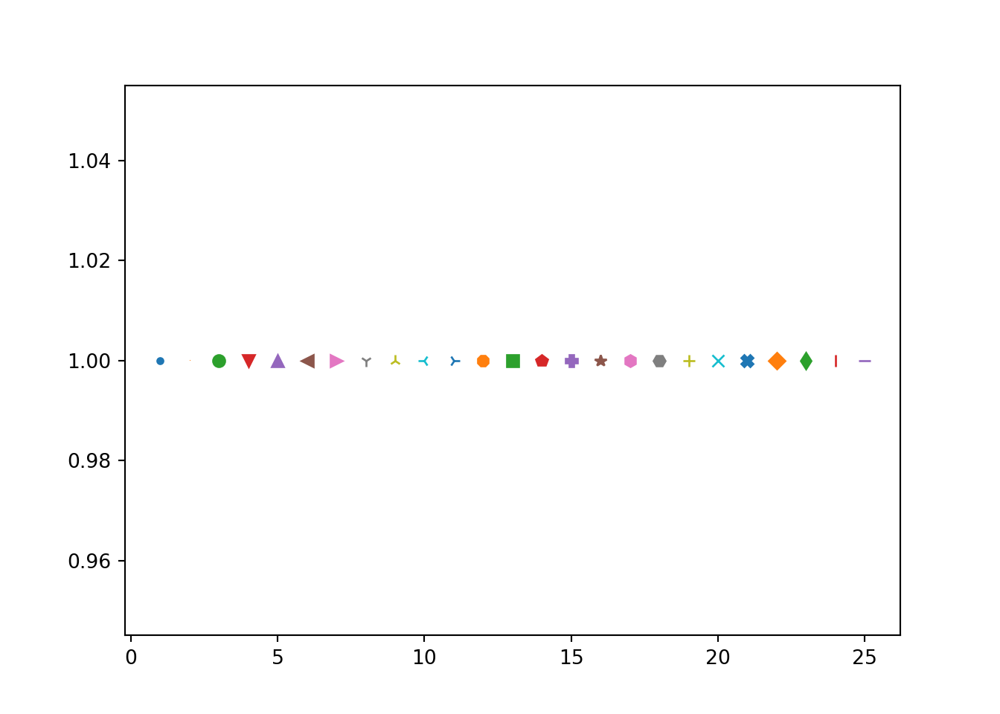
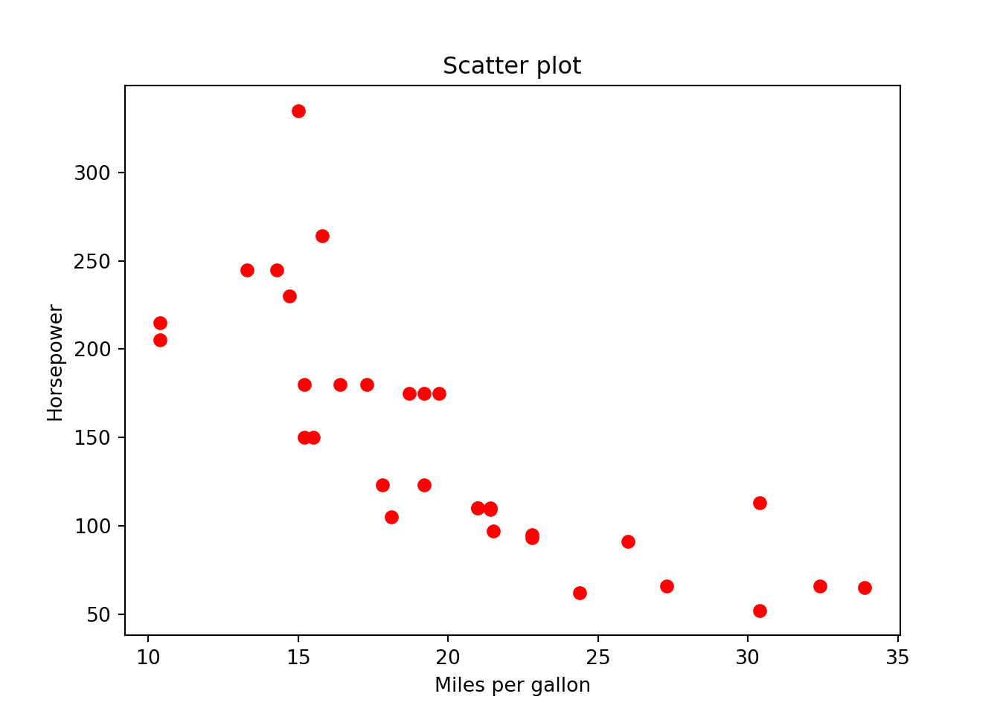
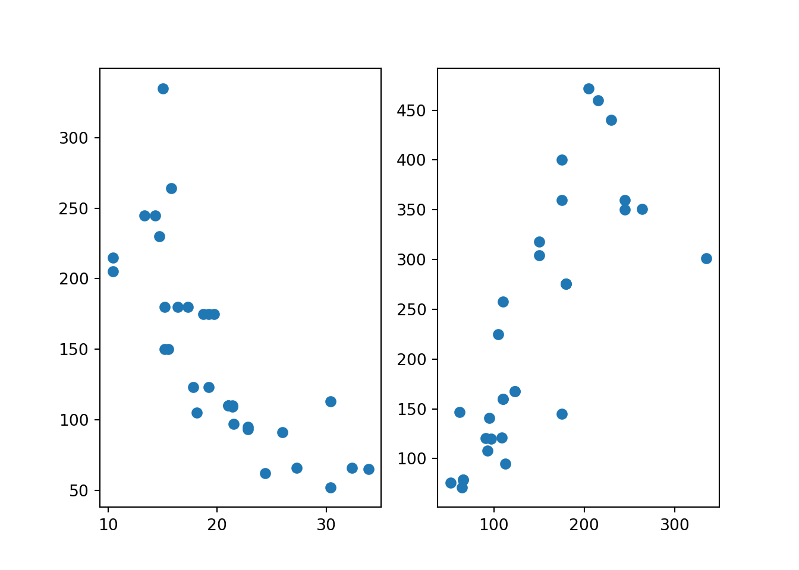
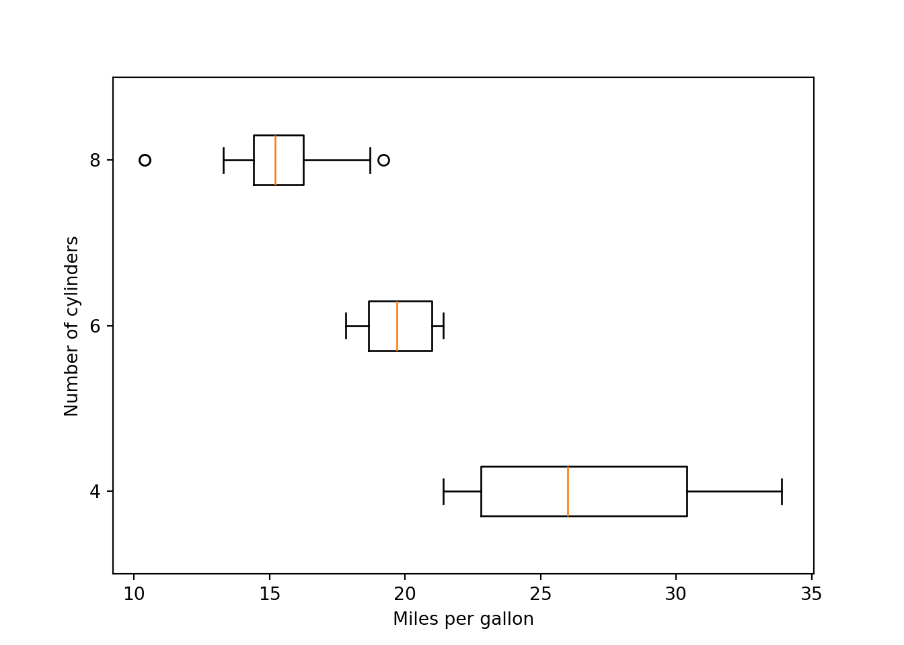
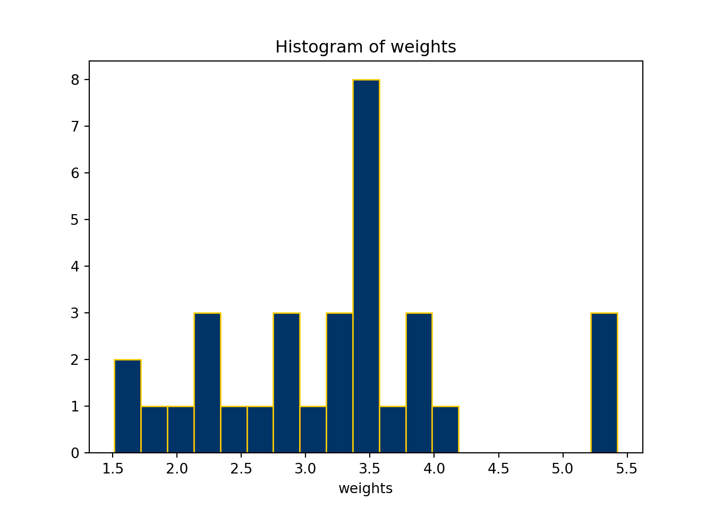
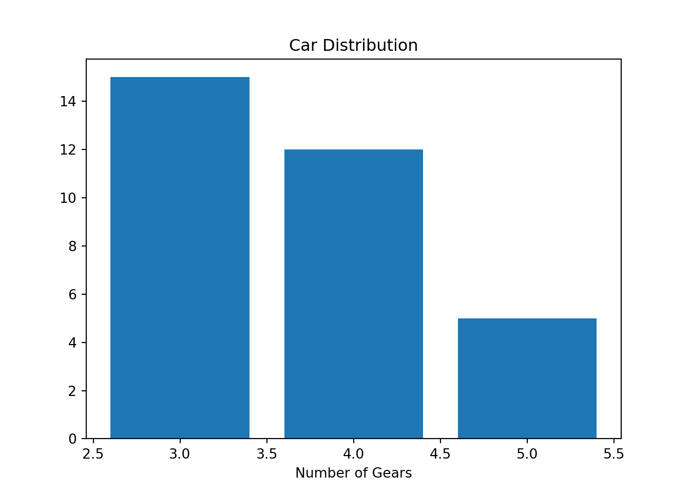
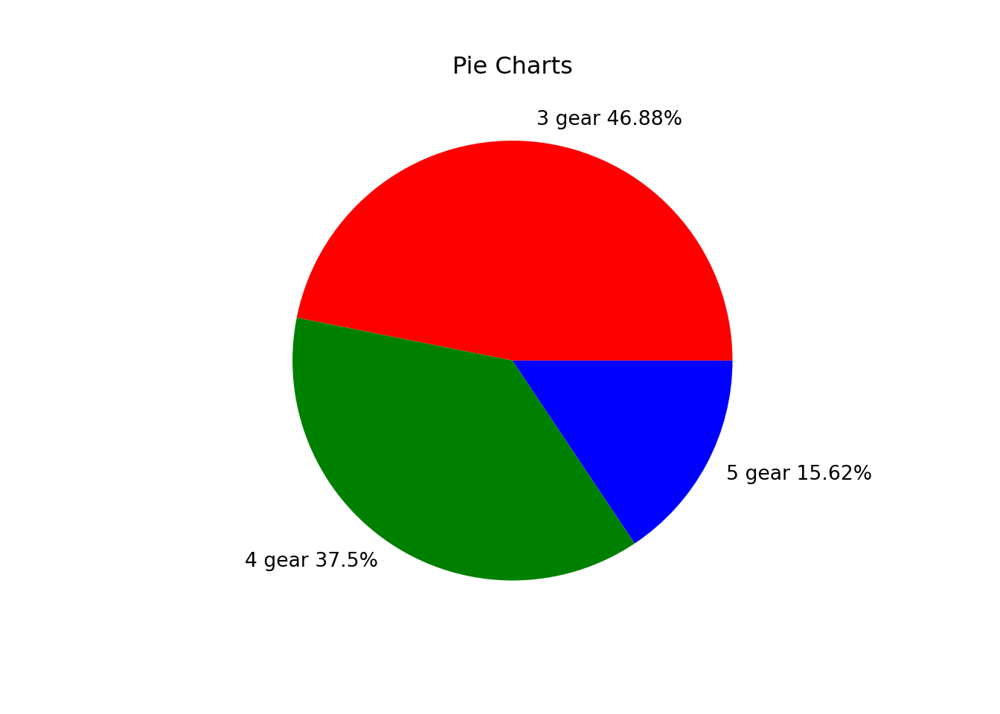
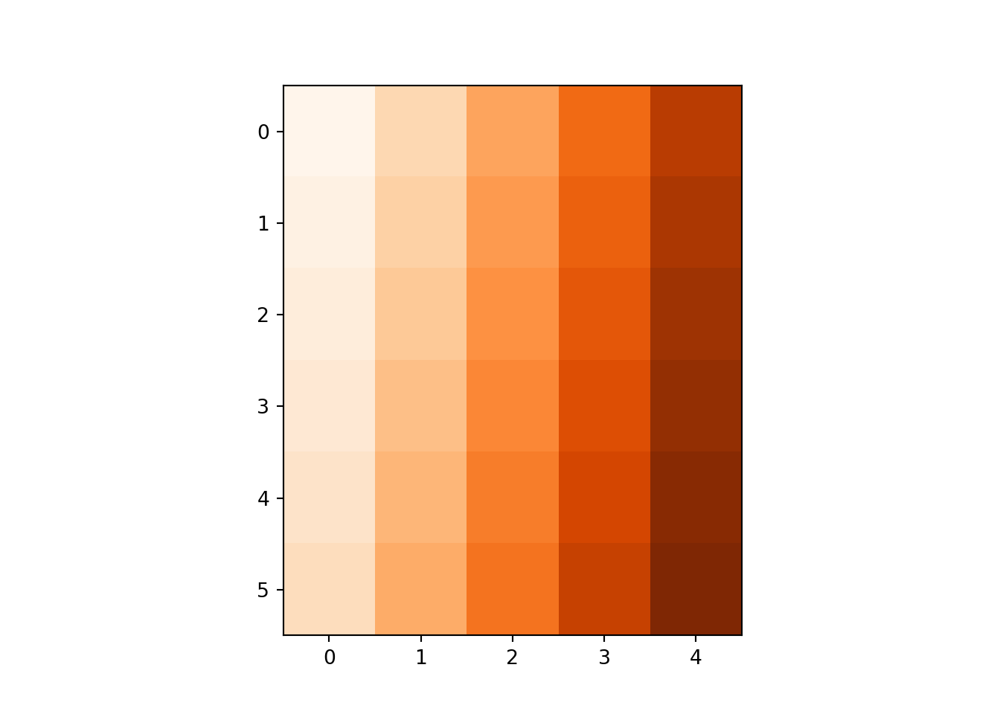
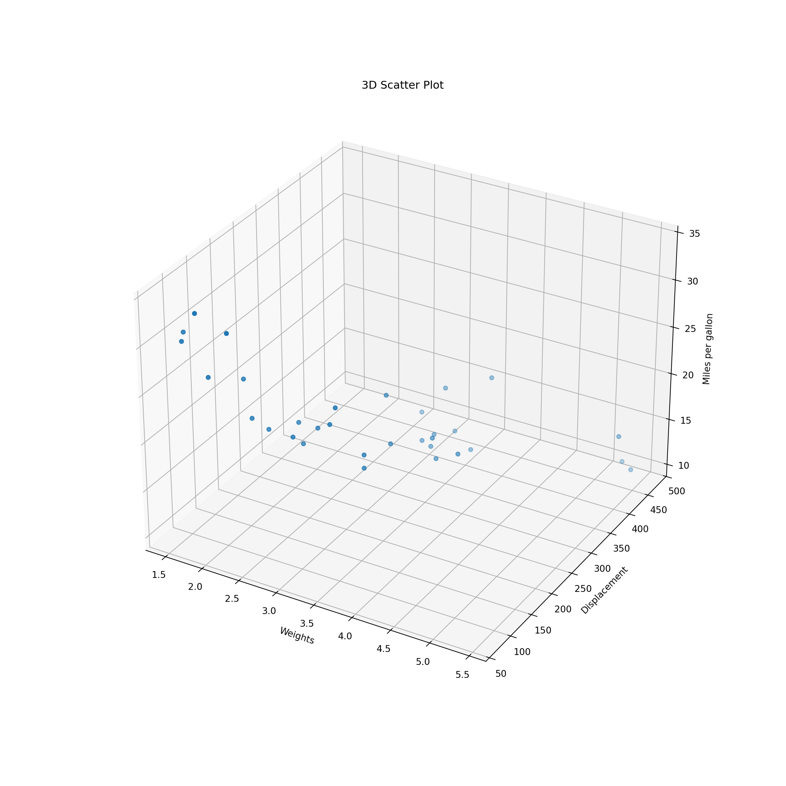
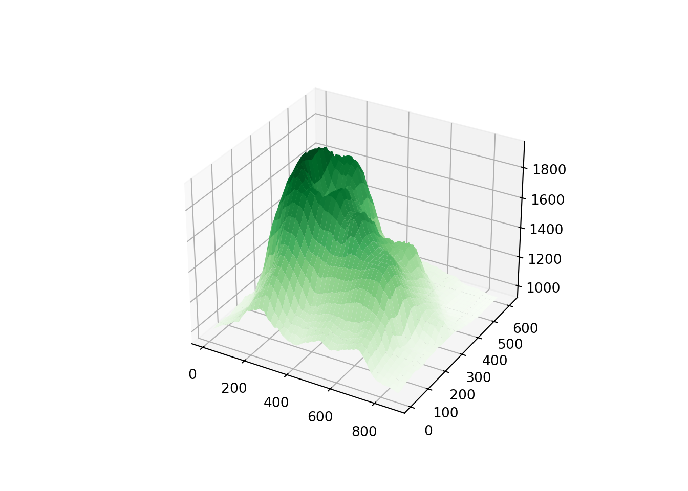

Appendix B — Python Programming
py_install("numpy")
py_install("pandas")
py_install("matplotlib")import numpy as np
import pandas as pd
import matplotlib.pyplot as pltB.1 Arithmetic and Logical Operators
2 + 3 / (5 * 4) ** 22.00755 == 5.00True5 == int(5)Truetype(int(5))<class 'int'>not True == FalseTruebool() converts nonzero numbers to True and zero to False
-5 | 0-51 & 11bool(2) | bool(0)TrueB.2 Math Functions
Need to import math library in Python.
import math
math.sqrt(144)12.0math.exp(1)2.718281828459045math.sin(math.pi/2)1.0math.log(32, 2)5.0abs(-7)7# python commentB.3 Variables and Assignment
x = 5
x5x = x + 6
x11x == 5Falsemath.log(x)2.3978952727983707B.4 Object Types
str, float, int and bool.
type(5.0)<class 'float'>type(5)<class 'int'>type("I_love_data_science!")<class 'str'>type(1 > 3)<class 'bool'>type(5) is floatFalseB.5 Data Structure - Lists
B.5.1 Lists
- Python has numbers and strings, but no built-in vector structure.
- To create a sequence type of structure, we can use a list that can save several elements in an single object.
- To create a list in Python, we use
[].
lst_num = [0, 2, 4]
lst_num[0, 2, 4]type(lst_num)<class 'list'>len(lst_num)3List elements can have different types!
B.5.2 Subsetting lists
lst = ['data', 'math', 34, True]
lst['data', 'math', 34, True]- Indexing in Python always starts at 0!
-
0: the 1st element
lst['data', 'math', 34, True]lst[0]'data'type(lst[0]) ## not a list<class 'str'>-
-1: the last element
lst[-2]34-
[a:b]: the (a+1)-th to b-th elements
lst[1:4]['math', 34, True]type(lst[1:4]) ## a list<class 'list'>-
[a:]: elements from the (a+1)-th to the last
lst[2:][34, True]What does lst[0:1] return? Is it a list?
B.5.3 Lists are mutable
- Lists are changed in place!
lst[1]'math'lst[1] = "stats"
lst['data', 'stats', 34, True]lst[2:] = [False, 77]
lst['data', 'stats', False, 77]If we change any element value in a list, the list itself will be changed as well.
B.5.4 List operations and methods list.method()
This is a common syntax in Python. We start with a Python object of some type, then type dot followed by any method specifically for this particular data type or structure for operations.
## Concatenation
lst_num + lst[0, 2, 4, 'data', 'stats', False, 77]## Repetition
lst_num * 3 [0, 2, 4, 0, 2, 4, 0, 2, 4]## Membership
34 in lstFalse## Appends "cat" to lst
lst.append("cat")
lst['data', 'stats', False, 77, 'cat']## Removes and returns last object from list
lst.pop()'cat'lst['data', 'stats', False, 77]## Removes object from list
lst.remove("stats")
lst['data', False, 77]## Reverses objects of list in place
lst.reverse()
lst[77, False, 'data']B.6 Data Structure - Tuples
Tuples work exactly like lists except they are immutable, i.e., they can’t be changed in place.
To create a tuple, we use
().
tup = ('data', 'math', 34, True)
tup('data', 'math', 34, True)type(tup)<class 'tuple'>len(tup)4tup[2:](34, True)tup[-2]34tup[1] = "stats" ## does not work!
# TypeError: 'tuple' object does not support item assignmenttup('data', 'math', 34, True)B.6.1 Tuples functions and methods
Lists have more methods than tuples because lists are more flexible.
# Converts a list into tuple
tuple(lst_num)(0, 2, 4)# number of occurance of "data"
tup.count("data")1# first index of "data"
tup.index("data")0B.7 Data Structure - Dictionaries
A dictionary consists of key-value pairs.
A dictionary is mutable, i.e., the values can be changed in place and more key-value pairs can be added.
To create a dictionary, we use
{"key name": value}.The value can be accessed by the key in the dictionary.
dic = {'Name': 'Ivy', 'Age': 7, 'Class': 'First'}dic['Age']7dic['age'] ## does not workdic['Age'] = 9
dic['Class'] = 'Third'
dic{'Name': 'Ivy', 'Age': 9, 'Class': 'Third'}B.7.1 Properties of dictionaries
- Python will use the last assignment!
dic1 = {'Name': 'Ivy', 'Age': 7, 'Name': 'Liya'}
dic1['Name']'Liya'Keys are unique and immutable.
A key can be a tuple, but CANNOT be a list.
## The first key is a tuple!
dic2 = {('First', 'Last'): 'Ivy Lee', 'Age': 7}
dic2[('First', 'Last')]'Ivy Lee'## does not work
dic2 = {['First', 'Last']: 'Ivy Lee', 'Age': 7}
dic2[['First', 'Last']]B.7.2 Disctionary methods
dic{'Name': 'Ivy', 'Age': 9, 'Class': 'Third'}## Returns list of dictionary dict's keys
dic.keys()dict_keys(['Name', 'Age', 'Class'])## Returns list of dictionary dict's values
dic.values()dict_values(['Ivy', 9, 'Third'])## Returns a list of dict's (key, value) tuple pairs
dic.items()dict_items([('Name', 'Ivy'), ('Age', 9), ('Class', 'Third')])## Adds dictionary dic2's key-values pairs in to dic
dic2 = {'Gender': 'female'}
dic.update(dic2)
dic{'Name': 'Ivy', 'Age': 9, 'Class': 'Third', 'Gender': 'female'}## Removes all elements of dictionary dict
dic.clear()
dicB.8 Python Data Structures for Data Science
Python built-in data structures are not specifically for data science.
To use more data science friendly functions and structures, such as array or data frame, Python relies on packages
NumPyandpandas.
B.8.1 Installing NumPy and pandas
In your RStudio project, run
library(reticulate)
virtualenv_create("myenv")Go to Tools > Global Options > Python > Select > Virtual Environments
You may need to restart R session. Do it, and in the new R session, run
library(reticulate)
py_install(c("numpy", "pandas", "matplotlib"))Run the following Python code, and make sure everything goes well.
import numpy as np
import pandas as pd
v1 = np.array([3, 8])
v1
df = pd.DataFrame({"col": ['red', 'blue', 'green']})
dfB.9 Pandas
pandas is a Python library that provides data structures, manipulation and analysis tools for data science.
import numpy as np
import pandas as pdB.9.1 Pandas series from a list
# import pandas as pd
a = [1, 7, 2]
s = pd.Series(a)
print(s)0 1
1 7
2 2
dtype: int64print(s[0])1## index used as naming
s = pd.Series(a, index = ["x", "y", "z"])
print(s)x 1
y 7
z 2
dtype: int64print(s["y"])7B.9.2 Pandas series from a dictionary
grade = {"math": 99, "stats": 97, "cs": 66}
s = pd.Series(grade)
print(s)math 99
stats 97
cs 66
dtype: int64grade = {"math": 99, "stats": 97, "cs": 66}
## index used as subsetting
s = pd.Series(grade, index = ["stats", "cs"])
print(s)stats 97
cs 66
dtype: int64How do we create a named vector in R?
grade <- c("math" = 99, "stats" = 97, "cs" = 66)B.9.3 Pandas data frame
- Create a data frame from a dictionary
data = {"math": [99, 65, 87], "stats": [92, 48, 88], "cs": [50, 88, 94]}
df = pd.DataFrame(data)
print(df) math stats cs
0 99 92 50
1 65 48 88
2 87 88 94- Row and column names
df.index = ["s1", "s2", "s3"]
df.columns = ["Math", "Stat", "CS"]
df Math Stat CS
s1 99 92 50
s2 65 48 88
s3 87 88 94B.9.4 Subsetting columns
- In Python,
[]returns Series,[[]]returns DataFrame! - In R,
[]returns tibble/data frame,[[]]returns vector!
By Names
## Series
df["Math"]s1 99
s2 65
s3 87
Name: Math, dtype: int64type(df["Math"])<class 'pandas.core.series.Series'>By Index
# ## DataFrame
df[["Math"]] Math
s1 99
s2 65
s3 87type(df[["Math"]])<class 'pandas.core.frame.DataFrame'>df[["Math", "CS"]] Math CS
s1 99 50
s2 65 88
s3 87 94isinstance(df[[“Math”]], pd.DataFrame)
B.9.5 Subsetting rows DataFrame.iloc
- integer-location based indexing for selection by position
df Math Stat CS
s1 99 92 50
s2 65 48 88
s3 87 88 94## first row Series
df.iloc[0] Math 99
Stat 92
CS 50
Name: s1, dtype: int64## first row DataFrame
df.iloc[[0]] Math Stat CS
s1 99 92 50## first 2 rows
df.iloc[[0, 1]] Math Stat CS
s1 99 92 50
s2 65 48 88## 1st and 3rd row
df.iloc[[True, False, True]] Math Stat CS
s1 99 92 50
s3 87 88 94
B.9.6 Subsetting rows and columns DataFrame.iloc
df Math Stat CS
s1 99 92 50
s2 65 48 88
s3 87 88 94## (1, 3) row and (1, 3) col
df.iloc[[0, 2], [0, 2]] Math CS
s1 99 50
s3 87 94## all rows and 1st col
df.iloc[:, [True, False, False]] Math
s1 99
s2 65
s3 87df.iloc[0:2, 1:3] Stat CS
s1 92 50
s2 48 88
B.9.7 Subsetting rows and columns DataFrame.loc
Access a group of rows and columns by label(s)
df Math Stat CS
s1 99 92 50
s2 65 48 88
s3 87 88 94df.loc['s1', "CS"]50## all rows and 1st col
df.loc['s1':'s3', [True, False, False]] Math
s1 99
s2 65
s3 87df.loc['s2', ['Math', 'Stat']]Math 65
Stat 48
Name: s2, dtype: int64
B.9.8 Obtaining a single cell value DataFrame.iat/ DataFrame.at
df Math Stat CS
s1 99 92 50
s2 65 48 88
s3 87 88 94df.iat[1, 2]88df.iloc[0].iat[1]92df.at['s2', 'Stat']48df.loc['s1'].at['Stat']92
B.9.9 New columns DataFrame.insert and new rows pd.concat
df Math Stat CS
s1 99 92 50
s2 65 48 88
s3 87 88 94df.insert(loc = 2,
column = "Chem",
value = [77, 89, 76])
df Math Stat Chem CS
s1 99 92 77 50
s2 65 48 89 88
s3 87 88 76 94df1 = pd.DataFrame({
"Math": 88,
"Stat": 99,
"Chem": 0,
"CS": 100
}, index = ['s4'])pd.concat(objs = [df, df1]) Math Stat Chem CS
s1 99 92 77 50
s2 65 48 89 88
s3 87 88 76 94
s4 88 99 0 100pd.concat(objs = [df, df1],
ignore_index = True)B.10 NumPy
B.10.1 NumPy for arrays/matrices
NumPy is used to work with arrays/matrices.
The array object in NumPy is called
ndarray.Use
array()to create an array.
range(0, 5, 1) # a seq of number from 0 to 4 with increment of 1range(0, 5)list(range(0, 5, 1))[0, 1, 2, 3, 4]import numpy as np
arr = np.array(range(0, 5, 1)) ## One-dim array
arrarray([0, 1, 2, 3, 4])type(arr)<class 'numpy.ndarray'>B.10.2 1D array (vector) and 2D array (matrix)
-
np.arange: Efficient way to create a one-dim array of sequence of numbers
np.arange(2, 5)array([2, 3, 4])np.arange(6, 0, -1)array([6, 5, 4, 3, 2, 1])- 2D array
np.array([[1, 2, 3], [4, 5, 6]])array([[1, 2, 3],
[4, 5, 6]])np.array([[[1, 2, 3], [4, 5, 6]], [[1, 2, 3], [4, 5, 6]]])array([[[1, 2, 3],
[4, 5, 6]],
[[1, 2, 3],
[4, 5, 6]]])
B.10.3 np.reshape()
arr2 = np.arange(8).reshape(2, 4)
arr2array([[0, 1, 2, 3],
[4, 5, 6, 7]])arr2.shape (2, 4)arr2.ndim2arr2.size8B.10.4 Stacking arrays
a = np.array([1, 2, 3, 4]).reshape(2, 2)
b = np.array([5, 6, 7, 8]).reshape(2, 2)
np.vstack((a, b))array([[1, 2],
[3, 4],
[5, 6],
[7, 8]])np.hstack((a, b))array([[1, 2, 5, 6],
[3, 4, 7, 8]])B.11 Plotting
pch = np.array(['.', ',', 'o', 'v', '^', '<', '>', '1', '2', '3', '4', '8', 's', 'p', 'P', '*', 'h', 'H', '+', 'x', 'X', 'D', 'd', '|', '_'])
#all types of maker
pch_len = pch.shape[0]
x = np.array([i for i in range(1, pch_len+1)])
y = np.ones(pch_len)plt.figure(0)
for i in range(0, pch_len):
plt.plot(x[i],y[i],pch[i])
B.11.1 Scatterplot
Code
mtcars = pd.read_csv('./data/mtcars.csv')
mtcars.iloc[0:15,0:4] mpg cyl disp hp
0 21.0 6 160.0 110
1 21.0 6 160.0 110
2 22.8 4 108.0 93
3 21.4 6 258.0 110
4 18.7 8 360.0 175
5 18.1 6 225.0 105
6 14.3 8 360.0 245
7 24.4 4 146.7 62
8 22.8 4 140.8 95
9 19.2 6 167.6 123
10 17.8 6 167.6 123
11 16.4 8 275.8 180
12 17.3 8 275.8 180
13 15.2 8 275.8 180
14 10.4 8 472.0 205import matplotlib.pyplot as plt
plt.scatter(x = mtcars.mpg, y = mtcars.hp, color = "r")
plt.xlabel("Miles per gallon")
plt.ylabel("Horsepower")
plt.title("Scatter plot")
B.11.2 Subplots
The command plt.scatter() is used for creating one single plot. If multiple subplots are wanted in one single call, one can use the format
fig, (ax1, ax2) = plt.subplots(1, 2)
ax1.scatter(x, y)
ax2.plot(x, y)fig, (ax1, ax2) = plt.subplots(1, 2)
ax1.scatter(x = mtcars.mpg, y = mtcars.hp)
ax2.scatter(x = mtcars.hp, y = mtcars.disp)
- Check Creating multiple subplots using
plt.subplotsfor more details.
B.11.3 Boxplot
Code
cyl_index = np.sort(np.unique(np.array(mtcars.cyl)))
cyl_shape = cyl_index.shape[0]
cyl_list = []
for i in range (0, cyl_shape):
cyl_list.append(np.array(mtcars[mtcars.cyl == cyl_index[i]].mpg))plt.boxplot(cyl_list, vert=False, tick_labels=[4, 6, 8]){'whiskers': [<matplotlib.lines.Line2D object at 0x30c59c200>, <matplotlib.lines.Line2D object at 0x30c59c4d0>, <matplotlib.lines.Line2D object at 0x30c59d490>, <matplotlib.lines.Line2D object at 0x30c59d700>, <matplotlib.lines.Line2D object at 0x30c59e6f0>, <matplotlib.lines.Line2D object at 0x30c59e990>], 'caps': [<matplotlib.lines.Line2D object at 0x30c59c710>, <matplotlib.lines.Line2D object at 0x30c59c9e0>, <matplotlib.lines.Line2D object at 0x30c59d9a0>, <matplotlib.lines.Line2D object at 0x30c59dc70>, <matplotlib.lines.Line2D object at 0x30c59ec60>, <matplotlib.lines.Line2D object at 0x30c59ef30>], 'boxes': [<matplotlib.lines.Line2D object at 0x30c435d00>, <matplotlib.lines.Line2D object at 0x30c59d1f0>, <matplotlib.lines.Line2D object at 0x30c59e420>], 'medians': [<matplotlib.lines.Line2D object at 0x30c59cc80>, <matplotlib.lines.Line2D object at 0x30c59df10>, <matplotlib.lines.Line2D object at 0x30c59f230>], 'fliers': [<matplotlib.lines.Line2D object at 0x30c59cf80>, <matplotlib.lines.Line2D object at 0x30c59e1b0>, <matplotlib.lines.Line2D object at 0x30c59f4d0>], 'means': []}plt.xlabel("Miles per gallon")
plt.ylabel("Number of cylinders")
B.11.4 Histogram
plt.hist(mtcars.wt,
bins = 19,
color="#003366",
edgecolor="#FFCC00")
plt.xlabel("weights")
plt.title("Histogram of weights")
B.11.5 Barplot
count_py = mtcars.value_counts('gear')
count_pygear
3 15
4 12
5 5
Name: count, dtype: int64plt.bar(count_py.index, count_py)
plt.xlabel("Number of Gears")
plt.title("Car Distribution")
B.11.6 Pie chart
percent = round(count_py / sum(count_py) * 100, 2)
texts = [str(percent.index[k]) + " gear " + str(percent.array[k]) + "%" for k in range(0,3)]plt.pie(count_py, labels = texts, colors = ['r', 'g', 'b'])([<matplotlib.patches.Wedge object at 0x30c5ccaa0>, <matplotlib.patches.Wedge object at 0x30c55d430>, <matplotlib.patches.Wedge object at 0x30c6f9820>], [Text(0.10781885436251686, 1.0947031993394165, '3 gear 46.88%'), Text(-0.6111272563215624, -0.9146165735327998, '4 gear 37.5%'), Text(0.9701133907831904, -0.5185364105085978, '5 gear 15.62%')])plt.title("Pie Charts")
B.11.7 2D Imaging
In Python,
mat_img = np.reshape(np.array(range(1,31)), [6,5], "F")
mat_imgarray([[ 1, 7, 13, 19, 25],
[ 2, 8, 14, 20, 26],
[ 3, 9, 15, 21, 27],
[ 4, 10, 16, 22, 28],
[ 5, 11, 17, 23, 29],
[ 6, 12, 18, 24, 30]])plt.imshow(mat_img, cmap = 'Oranges')
volcano = pd.read_csv('./data/volcano.csv', index_col=0)
x = 10*np.arange(1,volcano.shape[0]+1)
y = 10*np.arange(1,volcano.shape[1]+1)
X,Y = np. meshgrid(x,y)
vt = volcano.transpose()
print(vt.shape)(61, 87)print(X.shape)(61, 87)print(Y.shape)(61, 87)fig, ax = plt.subplots()
IM = ax.matshow(vt, alpha =1, cmap='terrain')
CS = ax.contour(vt, levels=np.arange(90,200,5))
ax.clabel(CS, inline=True, fontsize=10)
ax.set_title('Maunga Whau Volcano')B.11.8 3D scatterplot
In Python,
fig = plt.figure(figsize=(12, 12))
ax = fig.add_subplot(projection='3d')
ax.scatter(xs = mtcars.wt, ys = mtcars.disp, zs = mtcars.mpg)
ax.set_xlabel('Weights')
ax.set_ylabel("Displacement")
ax.set_zlabel("Miles per gallon")
ax.set_title("3D Scatter Plot")
B.11.9 Perspective plot
In Python,
x = 10*np.arange(1,volcano.shape[0]+1)
y = 10*np.arange(1,volcano.shape[1]+1)
vt = volcano.transpose()
Z = 10*vt
X,Y = np. meshgrid(x,y)
print(Z.shape)(61, 87)print(X.shape)(61, 87)print(Y.shape)(61, 87)fig, ax = plt.subplots(subplot_kw={"projection": "3d"})
# Plot the surface.
ax.plot_surface(X, Y, Z, cmap = 'Greens')
B.12 Special Objects
In python, NA, NaN and NULL are not that distinguishable, comparing to R.
NaNcan be used as a numerical value on mathematical operations, whileNonecannot (or at least shouldn’t).NaNis a numeric value, as defined in IEEE 754 floating-point standard.Noneis an internal Python type (NoneType) and would be more like “inexistent” or “empty” than “numerically invalid” in this context.
a = np.array([None, 0.9, 10])
type(a)<class 'numpy.ndarray'>a == Nonearray([ True, False, False])len(a)3print(type(a[0]))<class 'NoneType'>None == NoneTrue'' == NoneFalsea1 = np.array([-1,0,1])/0<string>:1: RuntimeWarning: divide by zero encountered in divide
<string>:1: RuntimeWarning: invalid value encountered in dividea1array([-inf, nan, inf])math.isfinite(0)Truemath.isnan(float("nan"))Truepd.isna(float("nan"))Truenp.isnan(float("nan"))Truemath.isfinite(7.8/1e-307)Truemath.isfinite(7.8/1e-308)Falsetype(None)<class 'NoneType'>## TypeError: '>' not supported between instances of 'NoneType' and 'int'
None > 5## TypeError: object of type 'NoneType' has no len()
len(None)float("NaN") > 5Falsev_none = np.array([3, None, 5])
v_nonearray([3, None, 5], dtype=object)v_nan = np.array([3, float("NaN"), 5])
v_nanarray([ 3., nan, 5.])# TypeError: unsupported operand type(s) for +: 'int' and 'NoneType'
sum(v_none)sum(v_nan)nanB.13 Conditions
if condition:
# code executed when condition is true
else:
# code executed when condition is falsea = 5
b = 20
if a > 4 or b > 4:
print('a > 4 or b > 4')a > 4 or b > 4if a > 4 and b > 4:
print('a > 4 and b > 4')a > 4 and b > 4if (a > 4) | (b > 4):
print('a > 4 or b > 4')a > 4 or b > 4if (a > 4) & (b > 4):
print('a > 4 and b > 4')a > 4 and b > 4B.14 Multiple conditions
if condition A:
# do that
elif condition B:
# do something else
else:
# rd = np.random.randint(100)
print(rd)16if rd <= 20:
print("rd <= 20")
elif rd > 20 and rd <= 40:
print('rd > 20 and rd <= 40')
elif rd > 40 and rd <= 60:
print('rd > 40 and rd <= 60')
elif rd > 60 and rd <= 80:
print('rd > 60 and rd <= 80')
elif rd > 80 and rd <= 100:
print('rd > 80 and rd <= 100')rd <= 20B.15 Functions
def function_name(arg1, arg2, ...):
## body
return(something)def add_number(a, b):
c = a + b
return c
n1 = 9
n2 = 18
add_number(n1, n2)27B.16 Loops
B.16.1 for loops
Python
for value in that:
# do thisfor i in range(5):
print('for', i)for 0
for 1
for 2
for 3
for 4for i in ['My', '1st', 'for', 'loop']:
print(i)My
1st
for
loopB.16.2 while loops
while (condition):
# do thisi = 1
while(i < 5):
print('while',i)
i = i + 1while 1
while 2
while 3
while 4np.random.seed(86)
def flip():
return np.random.choice(['T','H'], 1)
flips = 0
nheads = 0
while(nheads < 3):
if flip() == "H":
nheads += 1
else:
nheads = 0
flips += 1
flips9